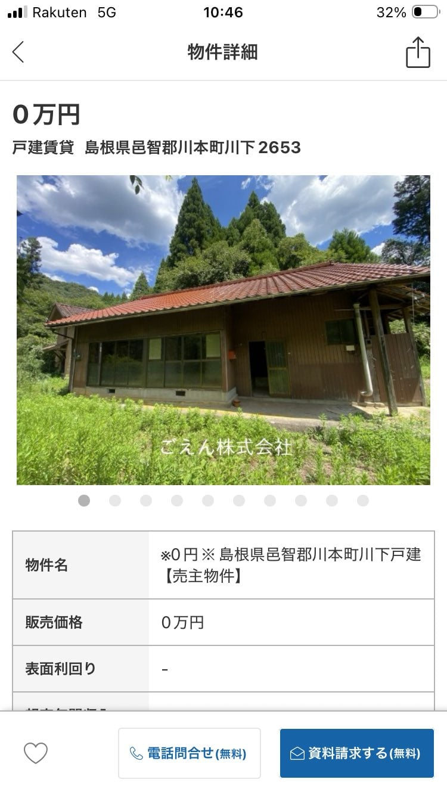
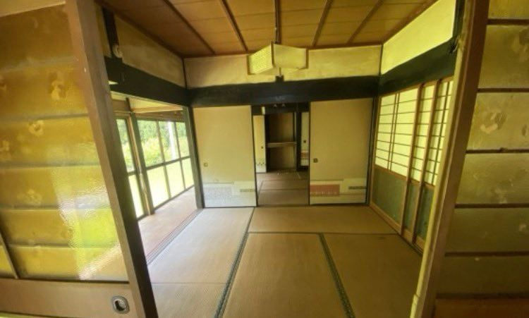

매각 가격 0엔에 나온 매물.
0엔인 이유
건축 연도 불명.
상하수도 없음.
재건축 불가 지역.
토지 경계 확인 안 됨.
보유 재산세 얼마인지 모름.
폭우가 내릴 시 산사태 위험 구역.
부지 내에 묘지 있음.
이러다 보니 현지 일본인들 입장에서도 0엔이 아니라
돈을 오히려 보태줘도 구매 안 한다는 의견이 많다.


매각 가격 0엔에 나온 매물.
0엔인 이유
건축 연도 불명.
상하수도 없음.
재건축 불가 지역.
토지 경계 확인 안 됨.
보유 재산세 얼마인지 모름.
폭우가 내릴 시 산사태 위험 구역.
부지 내에 묘지 있음.
이러다 보니 현지 일본인들 입장에서도 0엔이 아니라
돈을 오히려 보태줘도 구매 안 한다는 의견이 많다.
한국도 얼마 후엔 저렇게 될까
토지대장부도없으면 진짜 숨어지내던 안전가옥인가?
귀신이고 묘지고 그게문제가아니고
지나가던사람 들어와서 나 죽이고가면 ㄹㅇ비명횡사인데 저기어어떻게삼….
조건 모아놓고보니까 진짜 개씹쓰레기네
시마네현이면 개깡촌 아닌가
공짜폰 같은 건가
상하수도가 없으면 물을 길어와야하나?ㅋㅋㅋㅋ
+ 푸세식 뒷간
상하수도만 있었어도
안팔면 세금을 뜯기나보네 공짜로라도 넘길려는거 보면
그래서 어르신들이 집 대신 받아줄 사람 구하고 요양원 들어간다더라고
국가에 기부하면 되는거아닌가??
저런 매물 보면 저 집을 언제 지었고 그 당시엔 어떻게 살았는지 그 주변과 집이 궁금해짐
일본은 저런거 기부채납으로 국가에 던져버릴수 없나? 일본 국세청에선 계속 세금때먹을라고 안받아주는건가